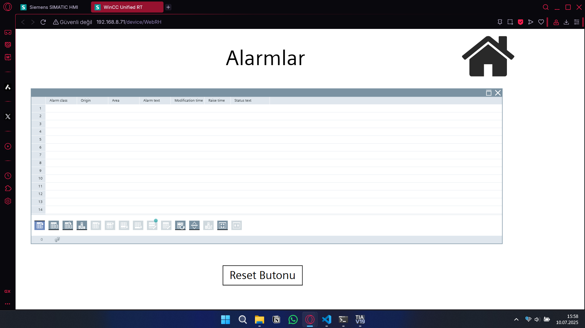
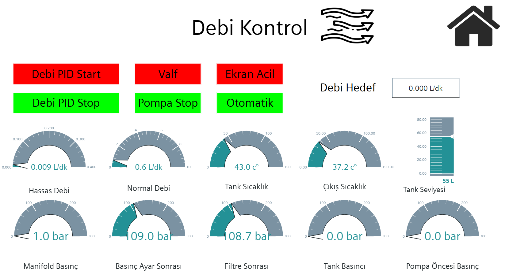
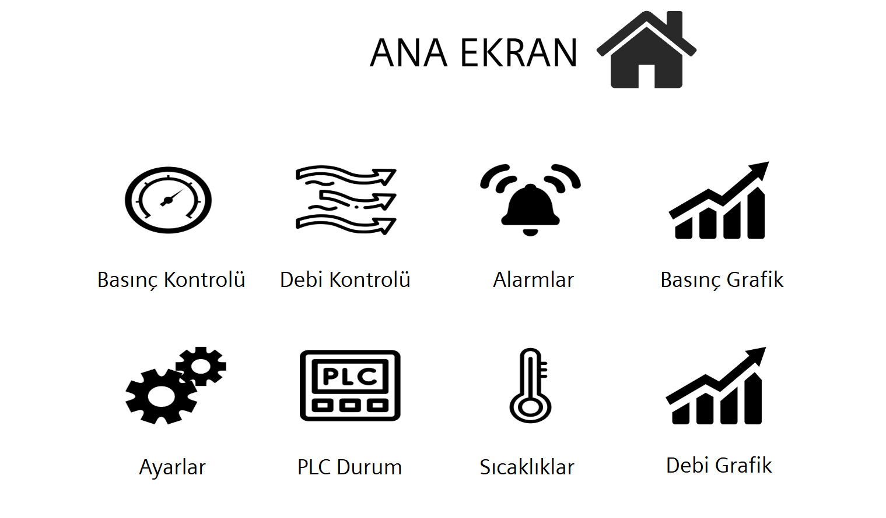
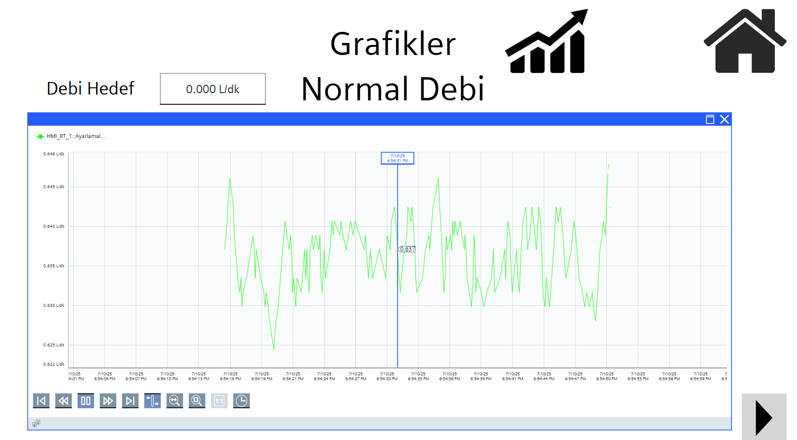
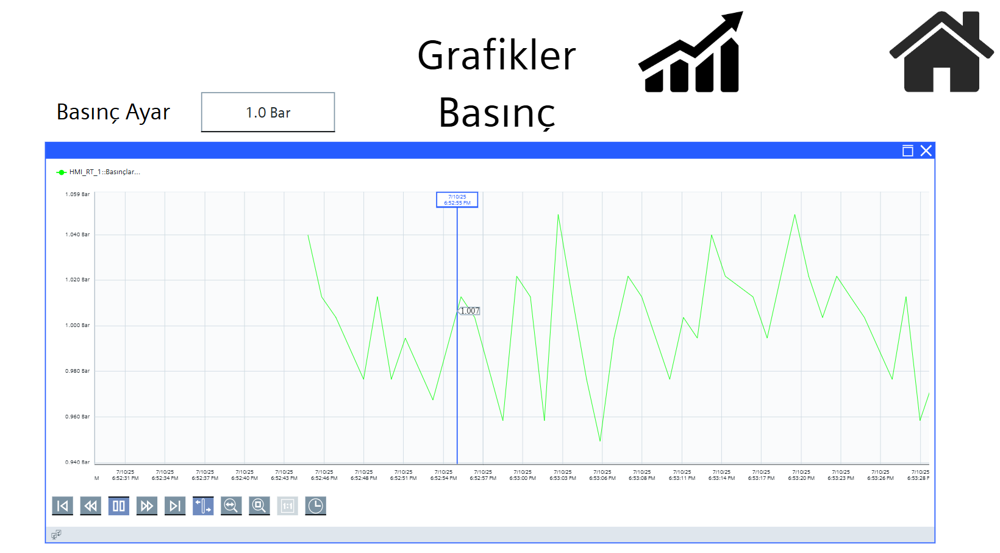
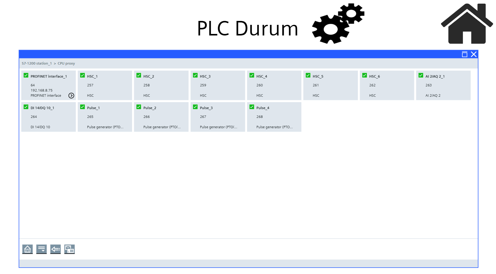
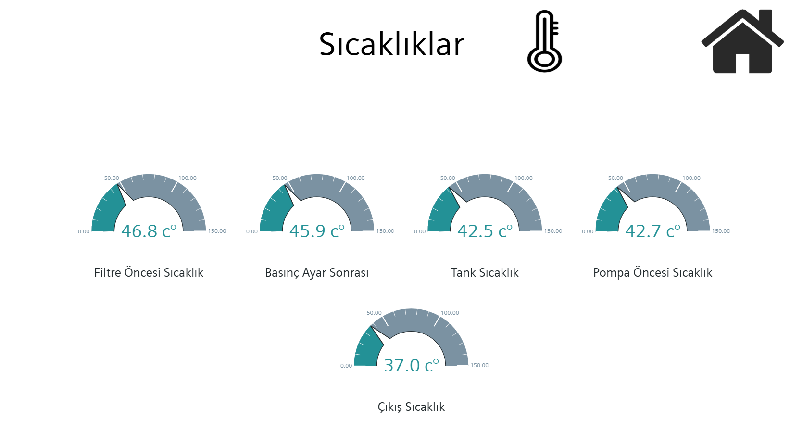
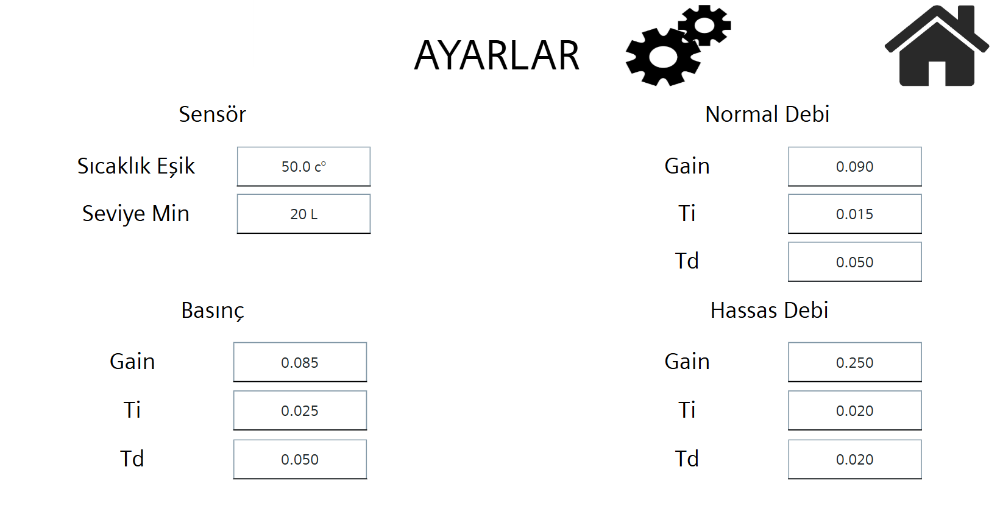
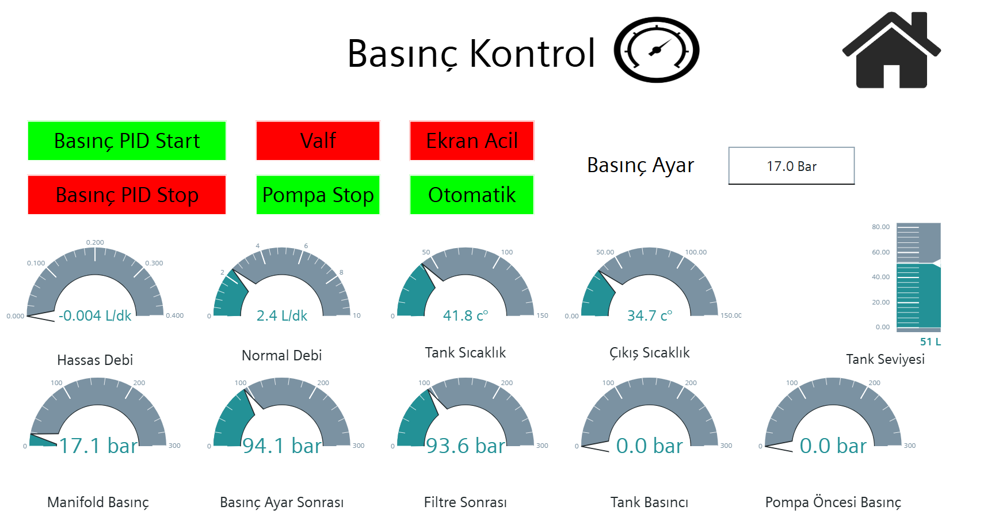

Siemens PLC ve Profinet iletişimle WinCC Unified HMI. Akış ve basınç ölçüm için yüksek hassasiyetli sensörler. Orantılı valflerle PID kontrol ile 0.0001 L/dak ve 0.01 bar hassasiyet. Yangın riski tespit sistemi. Patlama korunmalı sertifika.
Profinet protocol üzerinden doğrudan Siemens PLC ile haberleşen WinCC Unified HMI kullanan web ve yerel arayüz uyguladım. Jet yakıt akış ve basınç ölçümü için birçok yüksek hassasiyetli sensör entegre ettim. Orantılı valflerle yakıt akış ve basınç düzenleme için PID kontrol geliştirerek 0.0001 L/dak ve 0.01 bar hassasiyet sağladım.
Yangın riski tespit ve koruma sistemleri uyguladım. Tüm sensörler ve kontrol panelleri, tehlikeli ortamlarda güvenli çalışma için patlama korunmalı sertifikalıdır.
Jet yakıt test uygulamaları için orantılı valfler düzenleme amacıyla 0.0001 L/dak akış hassasiyeti sağlayan PID kontrol algoritmaları.
Orantılı valfler ve Siemens PLC kontrol mantığı ile 0.01 bar doğruluğa ulaşan yüksek hassasiyetli basınç kontrolü.
Profinet iletişim üzerinden sistem izleme, kontrol ve veri görselleştirme için web ve yerel operatör arayüzü.
Tehlikeli yakıt test ortamlarında güvenli çalışma için patlama korunmalı sertifikalı tüm sensörler ve kontrol panelleri.
Jet yakıt test prosedürleri sırasında güvenli kullanımı sağlayan entegre yangın riski tespit ve koruma sistemleri.
Jet yakıt karakterizasyonu için doğru ölçümler sağlayan Unimass akış sensörleri ve hassas basınç transdüserleri.









Bu CV'deki tüm projeler Doka Mühendislik'in izniyle paylaşılmıştır. Gizlilik anlaşmalarına saygı göstermek amacıyla tescilli bilgiler, müşteri adları ve hassas teknik ayrıntılar genelleştirilmiştir.